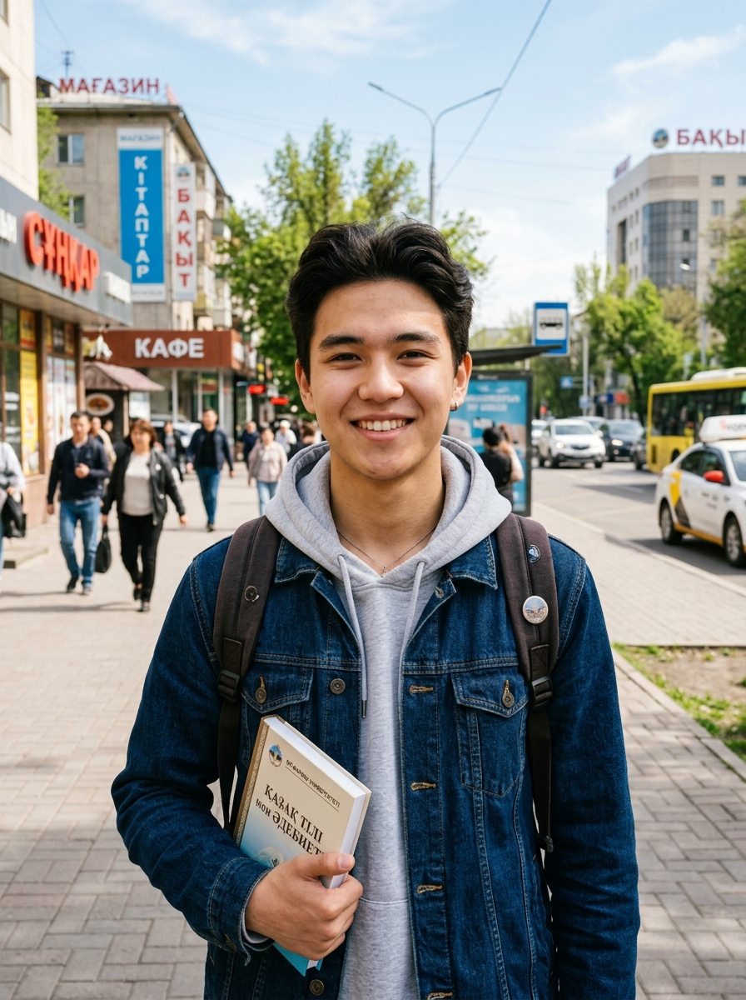
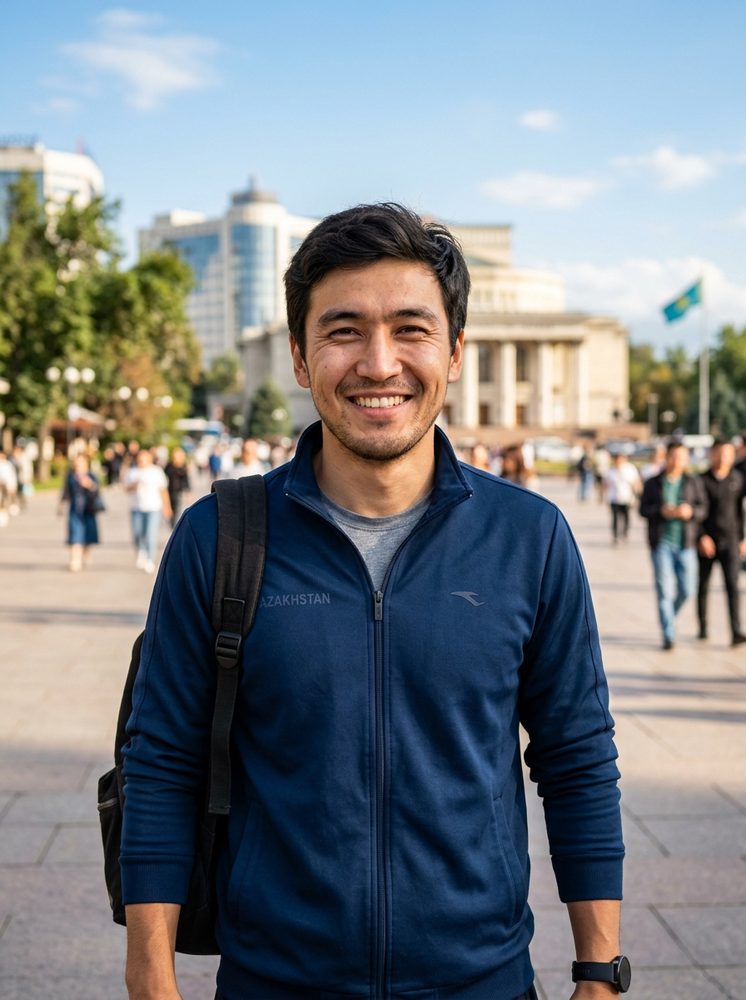
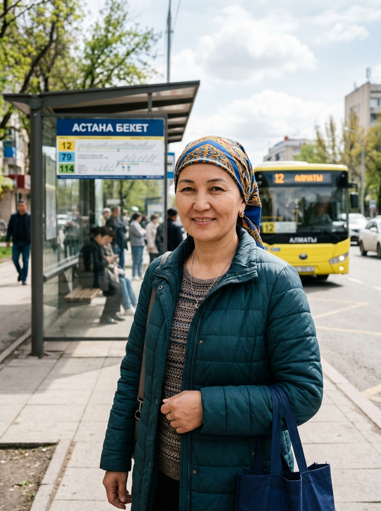
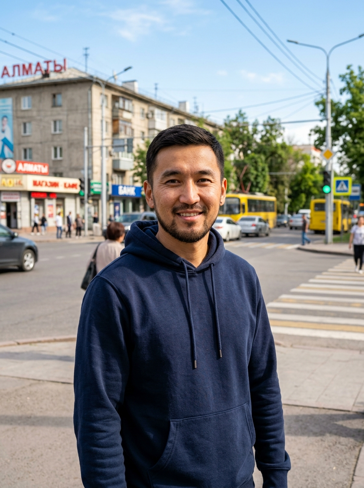
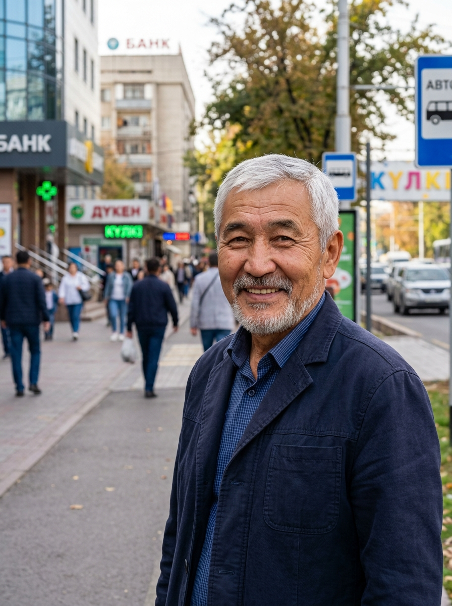
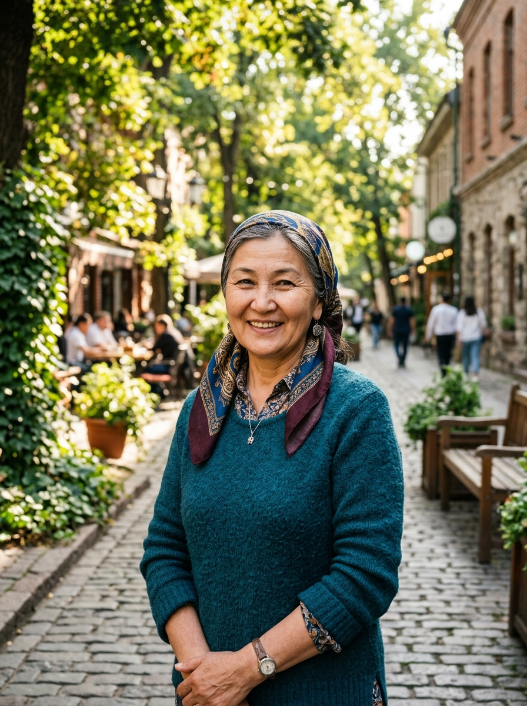
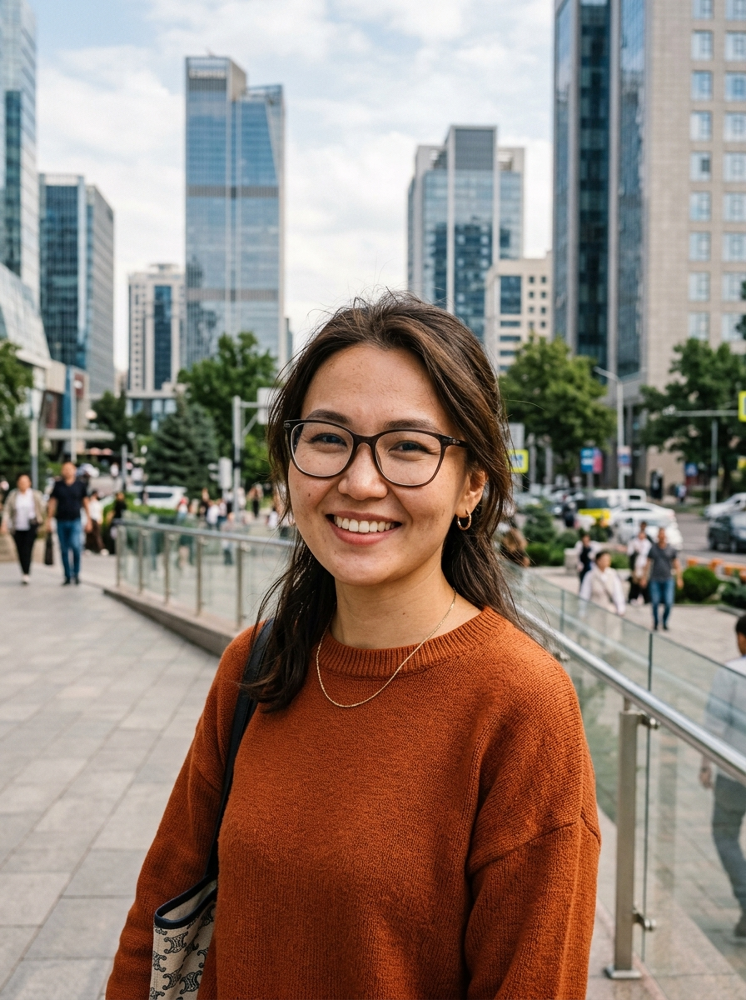

CityEye community
Celebrating the people who make our city cleaner, safer, and better for everyone.

Azamat
AstanaReported 15 open manholes.
Aizhan
AlmatyAdvocated for 5 traffic lights.

Serik
ShymkentCleaned 3 illegal dumpsites.

Madina
KaragandaHelped fix 20 streetlights.

Ruslan
AktobeMonitored 10 km of road repairs.
Gulnaz
TarazInitiated 8 playground updates.

Timur
PavlodarSaved 4 parks from dry trees.

Zarina
OskemenResolved 12 water leaks.

Bakhyt
SemeyPlanted 50 new trees in the city.